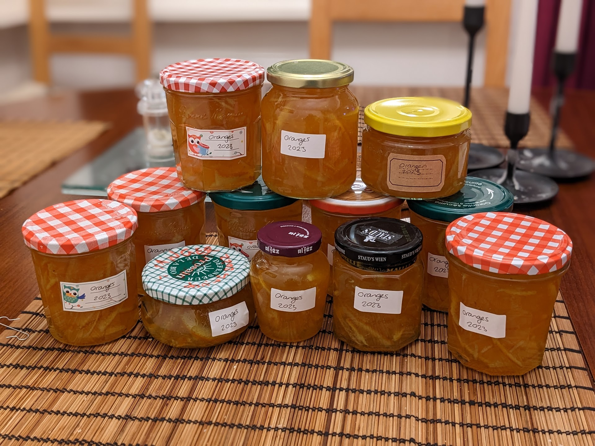

Marmelade d'oranges amères

Pour 8 pots (de 30cL chaque) environ :
- Quatre grosses oranges (amères si possible, mais c'est pas obligé) non traitées
- 2,5kg de sucre
- (Facultatif) Un sachet d'agar-agar (8g, mais on peut en mettre moins)
- Laver les oranges, les mettre (non épluchées) dans une marmite d'eau jusqu'à ébullition, et laisser mijoter pendant trois heures. Remettre de l'eau au fur et à mesure qu'il y en a trop qui s'évapore.
- Sortir les oranges et les laisser refroidir, et faire réduire le reste d'eau pour qu'il n'en reste qu'un litre (si on réduit trop, ajouter un peu d'eau pour compléter). Couper les oranges en très fines tranches (ou les passer directement au robot, en cas de flemme), en profiter pour enlever les pépins, en les gardant dans une boule à thé.
- Mettre les oranges, leur eau de cuisson, le sucre, l'agar-agar, et la boule à thé avec les pépins dans une marmite. Amener à ébullition et faire bouillir pendant un quart d'heure en mélangeant en permanence.
- Pendant ce temps, demander à quelqu'un de faire tremper les pots dans de l'eau bouillante et de les retourner sur un tissu pour les égoutter (il ne faut pas les essuyer). Au bout du quart d'heure d'ébullition, remplir doucement les pots, les refermer hermétiquement et les laisser refroidir retournés.
- Quand les pots sont tièdes (disons au bout d'une heure, un peu moins si les pots sont petits), les remettre à l'endroit. Vérifier que l'on ne peut pas appuyer sur les couvercles du doigt.
Remarque 1 : le goût de cette recette est vraiment moins sucré que la marmelade de supermarché. La quantité de sucre peut paraître énorme, mais il ne faut pas en mettre moins, sinon c'est trop amer.
Remarque 2 : on peut se passer d'agar-agar, la consistance obtenue est dans ce cas moins solide, mais très bonne quand même. Dans ce cas, mieux vaut maintenir l'ébullition pendant une vingtaine de minutes.